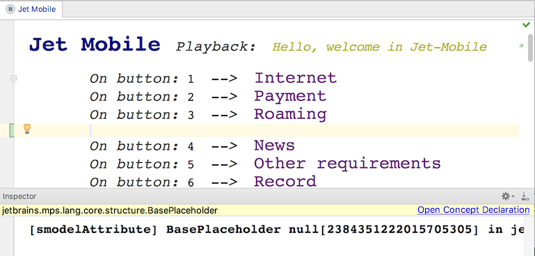

When positioned in a child collection, the Control/Cmd + Shift + Enter key combination will insert a generic placeholder node at the current position. It can serve as an empty position marker (e.g. an empty line) or a container for some additional information (e.g. comments). By default, this placeholder node is in the editor represented as empty space and behaves in a transparent way - you may still invoke the completion menu on the placeholder node to replace it with a valid child node or press Enter to add a node in the next sibling position.
